🔥
🔥
Nhiều quyết sách tài chính, ngân sách, đầu tư trình Quốc hội tại Kỳ họp thứ hai
Tại Kỳ họp thứ hai, Quốc hội khóa XVI, Bộ trưởng Bộ Tài chính thừa ủy quyền của Thủ tướng Chính phủ dự kiến trình Quốc hội xem xét nhiều dự án luật, nghị quyết quan trọng về ngân sách nhà nước, đầu tư công, tài sản công,
🔥
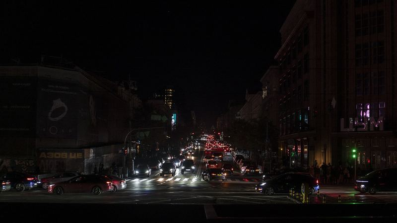
🔥
🔥
Phó Thủ tướng Nguyễn Văn Thắng: Yêu cầu giảm lãi suất cho vay từ 1,5 - 2% đối với sản xuất, kinh doanh và các lĩnh vực ưu tiên
TIN MỚI Chiều 16/10, tại trụ sở Chính phủ, Phó Thủ tướng Nguyễn Văn Thắng chủ trì cuộc họp về điều hành chính sách tiền tệ những tháng cuối năm, nhằm triển khai chỉ đạo của Tổng Bí thư, Chủ tịch nước, cùng các Nghị quyết
🔥
🔥
🔥
Ông Trần Lệ Nguyên đầu tư phim điện ảnh về nữ anh hùng Võ Thị Sáu, bắt tay đạo diễn “Hai Phượng”
TIN MỚI AIRO do ông Trần Lệ Nguyên, nhà sáng lập kiêm Tổng Giám đốc KIDO , giữ chức Chủ tịch HĐQT. Đây là bước đi tiếp theo của công ty trong lĩnh vực điện ảnh, sau khi ra mắt hệ sinh thái truyền thông, giải trí và thươn
🔥
🔥
🔥
Giá xăng dầu hôm nay 17/10: Thế giới tăng mạnh, xăng trong nước có kỳ giảm sâu
Giá dầu thế giới hôm nay Giá dầu quốc tế trong phiên giao dịch cuối cùng của tuần này (16/10) tăng mạnh. Giá dầu Brent lên mức gần 110 USD/thùng. Kết thúc phiên giao dịch 16/10, theo dữ liệu từ Oilprice, giá dầu Brent tă
🔥
🔥
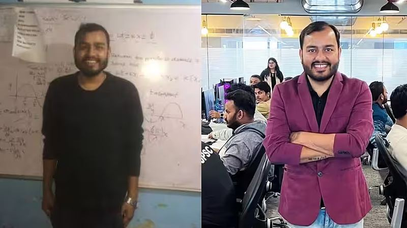
🔥
🔥
'Mối thù không đội trời chung' giữa hai đồng minh thân cận của ông Trump
'Mối thù không đội trời chung' giữa hai đồng minh thân cận của ông Trump Habba và Grenell, hai đồng minh thân cận của ông Trump, công khai đối đầu vì khoản tài trợ hàng triệu USD liên quan lợi ích kinh doanh ở Venezuela.
🔥
🔥
🔥
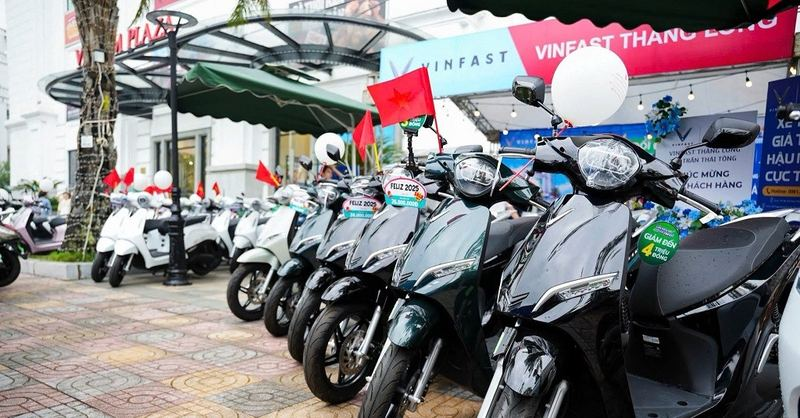
🔥
🔥
🔥
🔥
🔥
Giá vàng hôm nay 17/10: Tăng mạnh, vàng SJC lên gần 144 triệu đồng/lượng
Giá vàng thế giới hôm nay 17/10 Giá vàng thế giới hôm nay 17/10/2026 kết thúc tuần giao dịch ở mức trên 4.160 USD/ounce. Kim loại quý trải qua phiên cuối tuần biến động mạnh, có thời điểm chạm ngưỡng 4.200 USD/ounce trướ
🔥
Iran không theo đuổi vũ khí hạt nhân, ông Trump lại dọa tấn công Núi Pickaxe
Theo WANA, Tổng thống Iran Masoud Pezeshkian ngày 16/10 khẳng định Tehran không theo đuổi vũ khí hạt nhân, đồng thời bác bỏ những thông tin tuyên truyền sai lệch nhắm vào Iran . "Iran không tìm cách sở hữu vũ khí hạt nhâ
🔥
Trung Quốc giữ ngôi số 1, thương mại với Campuchia tăng vọt: Nghịch lý sau con số 17,58 tỷ USD
TIN MỚI Tờ Khmer Times (Campuchia) ngày 16/10 đưa tin, tổng kim ngạch thương mại của Campuchia với Trung Quốc đã tăng 23,8% so với cùng kỳ năm ngoái, đạt 17,58 tỷ USD trong chín tháng đầu năm 2026, duy trì vị thế của Tru
🔥
🔥
🔥
Nga tăng tốc thiết lập vùng đệm an ninh, Mỹ bác tin hạn chế Starshield ở Ukraine
Theo TASS, Tổng thống Nga Vladimir Putin ngày 16/10 tuyên bố Moscow sẽ tiếp tục tiến hành các cuộc tấn công nhắm vào cơ sở công nghiệp quốc phòng và trung tâm hậu cần của Ukraine , đồng thời đánh giá cao đà tiến công của
🔥
🔥
Chuyện hy hữu ở Ai Là Triệu Phú: Người chơi gọi điện thoại cho người thân nhờ trợ giúp nhưng... lộn số!
TIN MỚI Yếu tố khiến Ai Là Triệu Phú duy trì sức hút qua nhiều năm bên cạnh các câu hỏi kiến thức chính là những tình huống bất ngờ. Không phải lúc nào quyền trợ giúp cũng phát huy tác dụng như mong đợi và chính những sự
🔥
[Clip] Tài xế bất lực nhìn xe tải bị lửa thiêu rụi gần nút giao Vành đai 3 TPHCM
Tối 16/10, Công an TPHCM đang điều tra nguyên nhân vụ cháy xe tải trên đường Mỹ Phước - Tân Vạn, đoạn qua khu vực giáp ranh phường Thuận Giao và phường Phú Lợi. Theo thông tin ban đầu, khoảng 18h50 cùng ngày, xe tải mang
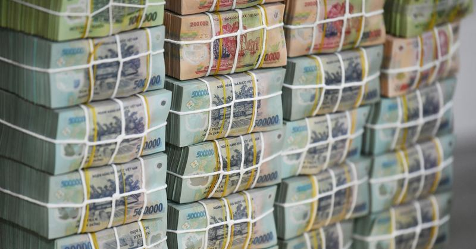
🔥Ngân hàng rao bán nợ thế chấp nghìn m2 đất của thẩm mỹ viện phục vụ nhiều người nổi tiếng
Agribank vừa thông báo bán đấu giá toàn bộ khoản nợ của Công ty TNHH Halavu Clinic tại Agribank Chi nhánh Chợ Lớn theo hợp đồng tín dụng số 6220-LAV-202500179/HĐTD ký ngày 25/4/2025. Theo thông báo của ngân hàng, giá trị
🔥
🔥
Một trong những nền kinh tế lớn nhất thế giới ‘lún sâu’ vào nợ nần: Gánh gần 3.900 tỷ USD, nguy cơ khủng hoảng lan rộng
TIN MỚI Pháp, nền kinh tế lớn thứ 2 Liên minh châu Âu (EU), đang trở thành tâm điểm bất ổn trên thị trường trái phiếu khu vực. Trong bối cảnh chính phủ gặp khó khăn khi tìm kiếm sự đồng thuận về chính sách tài khóa, chi
🔥
Cập nhật BCTC quý 3/2026 ngày 17/10: Một doanh nghiệp khoáng sản báo lãi gấp 4 lần, loạt công ty thủy điện giảm lợi nhuận
TIN MỚI Các doanh nghiệp mới công bố BCTC quý 3/2026 ngày 17/10: Thủy điện Nước Trong (NTH) ghi nhận lợi nhuận trước thuế quý 3/2026 đạt 3 tỷ đồng, giảm 78% so với cùng kỳ. Lũy kế 9 tháng đầu năm 2026, doanh nghiệp báo l
🔥
Trộm cắp thiết bị điện: Món lời vài triệu, thiệt hại hàng trăm triệu đồng
Hiện trường một số vụ mất trộm - Ảnh: Công ty Điện lực Đồng Nai Thiệt hại hàng tỉ đồng từ những vụ trộm Rạng sáng 31-7-2026, hai thanh niên mang kìm cộng lực và thanh gỗ dài đến cầu N3, đường dẫn cao tốc Biên Hòa – Vũng
🔥
🔥
🔥
Lãi suất cao khiến giá nhà nhiều nơi giảm mạnh thì có nên tranh thủ "bắt đáy"?: Chuyên gia nói người có sẵn tiền mặt đang lợi thế lớn khi đàm phán
TIN MỚI Sau giai đoạn tăng nóng 2024–2025, thị trường nhà ở đang điều chỉnh. Tại hội thảo "Bất động sản sau cơn sốt - Giá sẽ đi về đâu?" do Báo Nông thôn Ngày nay/Dân Việt tổ chức sáng 15/10, ông Trần Quang Trung, Giám đ
🔥
Kỳ họp thứ hai, Quốc hội khóa XVI: Tiếp nối quyết sách, tạo động lực phát triển
Với chương trình nghị sự lớn, tập trung vào hoàn thiện pháp luật, quyết định kế hoạch phát triển kinh tế - xã hội, tài chính, ngân sách và đầu tư công, Kỳ họp thứ hai, Quốc hội khóa XVI có ý nghĩa quan trọng trong việc c
🔥
🔥
🔥
🔥
🔥
Nguyên giảng viên Đại học Bách khoa đặt mục tiêu xây 10.000 căn NOXH, liên tiếp thâu tóm dự án của Phát Đạt, Saigonres, từng muốn đấu giá 3.790 căn tái định cư Thủ Thiêm
TIN MỚI Trong năm 2026, doanh nghiệp liên tiếp xuất hiện trong các thương vụ nhận chuyển nhượng dự án, đồng thời đưa dự án đầu tiên tại Đồng Nai ra thị trường và đề xuất nghiên cứu đầu tư nhiều công trình hạ tầng tại Lâm
🔥
🔥
🔥
Phát hiện người đàn ông từng lưu ban lớp 6, phải nghỉ học đi làm ruộng, sau này làm chủ doanh nghiệp trị giá hơn 12.000 tỷ đồng
TIN MỚI Từng lưu ban lớp 6, phải nghỉ học giữa chừng đi làm ruộng Theo The Times of India, P. C. Musthafa sinh ra trong một gia đình nghèo tại làng Chennalode, thuộc huyện Wayanad, bang Kerala, Ấn Độ.
🔥
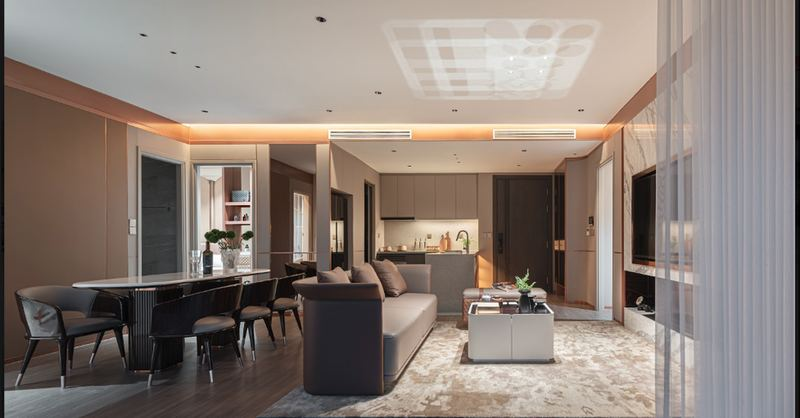
🔥
🔥
🔥
🔥
Giáo hoàng Leo gọi điện cho Tổng thống Nga Putin sau khi phẫu thuật ung thư phổi
Giáo hoàng cử hành thánh lễ trong nhà nguyện của bệnh viện. Trong cuộc điện đàm ngày 16/10, Giáo hoàng bày tỏ quan ngại về “tình hình nhân đạo nghiêm trọng” tại một thành phố của Ukraine mà Nga đang kiểm soát, Vatican ch
🔥
🔥
Chỉ mới 13 tuổi mà ca sĩ này đã ra dáng đại mỹ nhân, nhan sắc cỡ này “dậy sóng” showbiz là có lý do
TIN MỚI Mới đây, đoạn fancam trình diễn của một tân binh nữ thuộc dự án A2O LITE đang trở thành tâm điểm chú ý, được thảo luận sôi nổi trên các nền tảng mạng xã hội. Nhân vật trung tâm của sự chú ý là Aijing, thành viên
 🔥
🔥
🔥
🔥
🔥
 🔥
🔥
🔥
Huy động hơn 28.000 m³ bê tông xây cầu vòm phá kỷ lục thế giới: Dài gần bằng cầu Long Biên, tiết kiệm hơn 80 triệu USD
TIN MỚI Ảnh minh họa Cầu vòm bê tông Tian'e Longtan tại Quảng Tây, Trung Quốc, có nhịp chính dài 600 m, vượt kỷ lục trước đó 155 m. Công trình sử dụng thiết kế kết cấu mới, giúp giảm 22% lượng bê tông trên mỗi mét cầu và
🔥
🔥
🔥
Bộ trưởng Ngoại giao Lê Hoài Trung làm Trưởng Ban Tổ chức hai hội nghị cấp cao
Ngày 16/10, Phó Thủ tướng Phan Văn Giang ký quyết định thành lập Ban Tổ chức Hội nghị cấp cao Hợp tác Campuchia - Lào - Myanmar - Việt Nam lần thứ 12 (CLMV 12) và Hội nghị cấp cao Chiến lược hợp tác kinh tế Ayeyawady - C
🔥
🔥
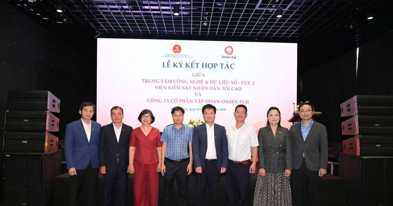
🔥
🔥
Vikki Digital Bank: Xây ngân hàng số bằng công nghệ, phát triển bằng con người
TIN MỚI Từ ngân hàng số đến những điểm chạm trong đời sống Vikki Digital Bank định vị mô hình ngân hàng số không chỉ giới hạn trong một ứng dụng, mà hướng tới một "điểm hẹn tài chính", nơi các nhu cầu từ tài khoản
🔥
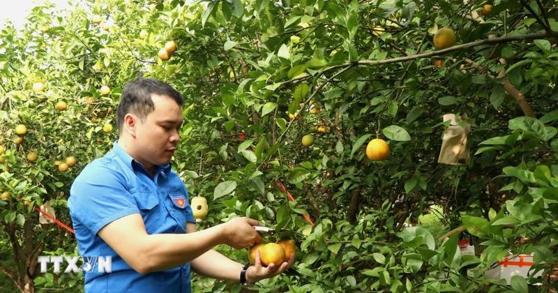
🔥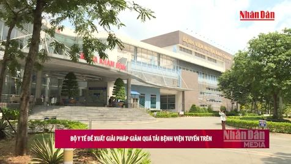
🔥
🔥
🔥
🔥
Nợ thuế hơn 3 tỷ, công ty bị cưỡng chế hóa đơn, tiếp tục kinh doanh thế nào?
Ông T.A (Đà Nẵng) cho biết công ty hoạt động trong lĩnh vực xuất nhập khẩu. Trước khi chính sách thuế mới có hiệu lực, doanh nghiệp đã ký các hợp đồng kinh doanh dài hạn với giá bán cố định. Khi chính sách thay đổi, phát
🔥
Anh ‘bơm’ thêm tên lửa Storm Shadow cho Ukraine, giải mã công nghệ ‘bắn và quên’
Vương quốc Anh vừa quyết định cung cấp thêm loạt tên lửa hành trình tầm xa Storm Shadow cho Ukraine nhằm hỗ trợ Kyiv đối phó các hoạt động quân sự Nga nhắm vào hạ tầng dân sự trước mùa đông, đồng thời tiếp tục thúc đẩy v
🔥
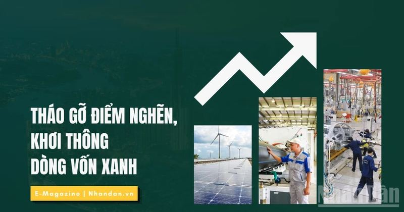
🔥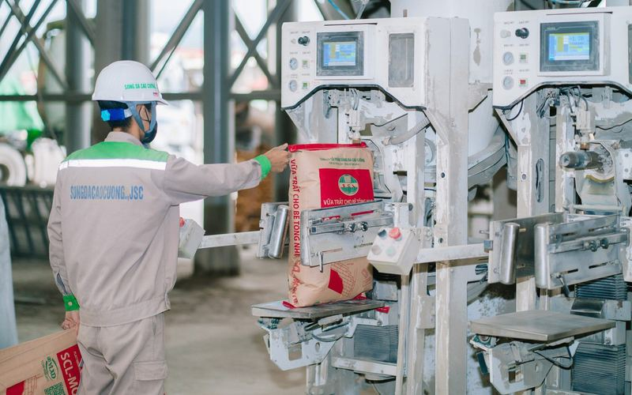
🔥Bán bê tông, vữa khô cho công ty của Vingroup, một doanh nghiệp báo lãi tăng 136%, vượt kế hoạch năm chỉ sau 9 tháng
SCL: Giá hiện tại Thay đổi Xem hồ sơ doanh nghiệp TIN MỚI Công ty Cổ phần Sông Đà Cao Cường (mã chứng khoán SCL) vừa công bố báo cáo tài chính quý III/2026 với doanh thu thuần hơn 263 tỷ đồng, tăng gần 98% so với cùng kỳ
🔥
Cập nhật số liệu CTCK ngày 17/10: Xuất hiện khoản lỗ trăm tỷ đầu tiên của ngành chứng khoán quý 3/2026
TIN MỚI Tính đến ngày 17/10, trong nhóm 10 công ty chứng khoán đã được cập nhật kết quả kinh doanh quý 3/2026, có 5 doanh nghiệp báo lãi và 5 doanh nghiệp ghi nhận thua lỗ. Những báo cáo mới nhất cho thấy sự phân hóa rõ
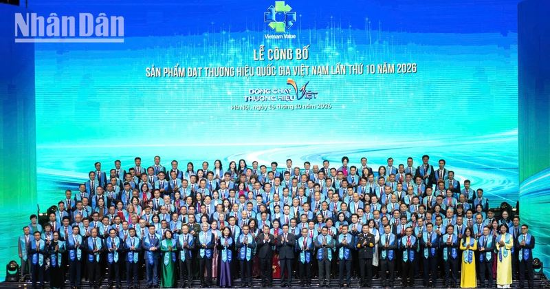
🔥[Ảnh] Tự hào bản lĩnh doanh nghiệp và vị thế quốc gia trên trường quốc tế
Thủ tướng Lê Minh Hưng nhấn mạnh, cộng đồng doanh nghiệp Việt Nam dần chuyển dịch mạnh mẽ từ "làm ra tại Việt Nam" sang "sáng tạo bởi Việt Nam", khẳng định năng lực tự chủ và sức cạnh tranh thực chất. Thủ tướng Lê Minh H
🔥
🔥
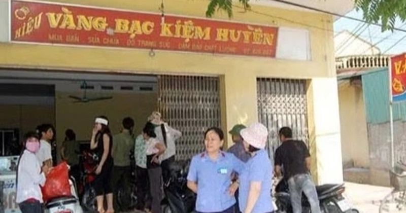
🔥
🔥
Động thái chưa từng có của Vingroup mở ra cơ hội lớn cho hàng loạt doanh nghiệp Việt
TIN MỚI Hội nghị Tăng cường Nội địa hóa và Phát triển Hệ thống Nhà cung cấp 2026 do Vingroup và VinFast phối hợp tổ chức, quy tụ gần 1.000 doanh nghiệp hoạt động trong các lĩnh vực sản xuất công nghiệp, cơ khí, chế tạo,
🔥
Kỳ họp thứ 2, Quốc hội khóa XVI: Từ tháo gỡ điểm nghẽn đến kiến tạo không gian phát triển mới
Tiếp tục đổi mới tư duy lập pháp, từ "luật để quản" sang "luật để kiến tạo" Đại biểu Quốc hội Trần Văn Khải, Phó Chủ nhiệm Ủy ban Khoa học, Công nghệ và Môi trường của Quốc hội (Đoàn Ninh Bình) cho biết, trong gần 30 ngà
🔥
🔥
🔥
Hơn 3.000 tỷ đồng cổ phiếu Việt Nam vừa bị khối ngoại bán ròng xuyên suốt 5 phiên, mã nào là tâm điểm "xả"?
TIN MỚI Thị trường chứng khoán Việt Nam trải qua tuần giao dịch 12–16/10 với nhiều biến động khi áp lực bán gia tăng ngay từ phiên đầu tuần, khiến VN-Index nhanh chóng đánh mất mốc 1.720 điểm. Trong những phiên tiếp theo
🔥
Nâng cấp hạ tầng công nghệ và đổi mới phương pháp: Lời giải cho bài toán chuyển đổi số giáo dục
Triển lãm VietEdu Fair 2026 diễn ra từ ngày 15-18/10 tại Trung tâm triển lãm Việt Nam (Hà Nội), quy tụ 70 doanh nghiệp với hơn 60 gian hàng đến từ Việt Nam, Hàn Quốc và nhiều quốc gia khác. Bên cạnh các hoạt động giao th
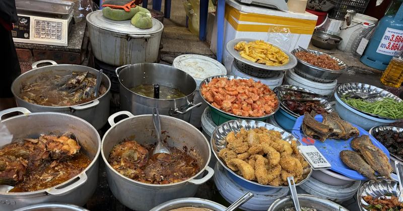
🔥
🔥
🔥
🔥
LiveTin tức quốc tế ngày 17.10: Quyết định mới về Ukraine của Tổng thống Putin
Iran bác cáo buộc có liên quan các cuộc tấn công của Houthi Iran ngày 16.10 đã bác bỏ mọi cáo buộc cho rằng nước này có liên quan đến các cuộc tấn công của lực lượng Houthi tại Yemen. Tuyên bố này được đưa ra một ngày sa
🔥
[Infographic] Triển khai thử nghiệm Chỉ số bảo đảm an ninh mạng từ năm 2027
Phó Thủ tướng Thường trực Phạm Gia Túc vừa ký Quyết định số 1964/QĐ-TTg ngày 12/10/2026 của Thủ tướng Chính phủ về việc ban hành Chỉ số bảo đảm an ninh mạng. Chỉ số gồm 3 nhóm tiêu chí với 29 tiêu chí thành phần, được tr
🔥
🔥
Ông Phạm Nhật Vượng đặt hơn 100 dây chuyền TBM làm metro Hà Nội: Kỷ lục thế giới là 23 máy cùng chạy, Trung Quốc từng cần tới 201 máy
Ông Phạm Nhật Vượng đặt hơn 100 dây chuyền TBM làm metro Hà Nội: Kỷ lục thế giới là 23 máy cùng chạy, Trung Quốc từng cần tới 201 máy Theo Linh Linh | 17/10/2026 07:43 AM | Kinh doanh Theo dõi Cafebiz.vn trên Từ những đư
🔥
 🔥
🔥
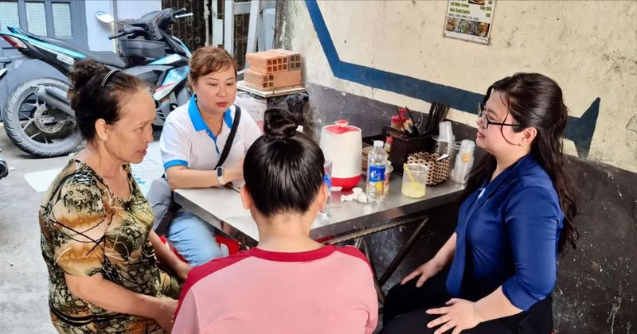
🔥
🔥
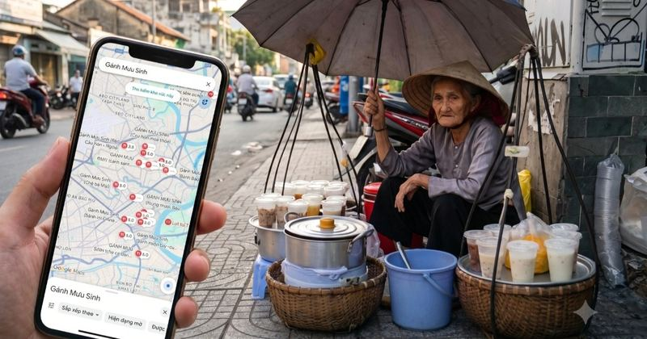
🔥
🔥
🔥
🔥
🔥
🔥
🔥
🔥
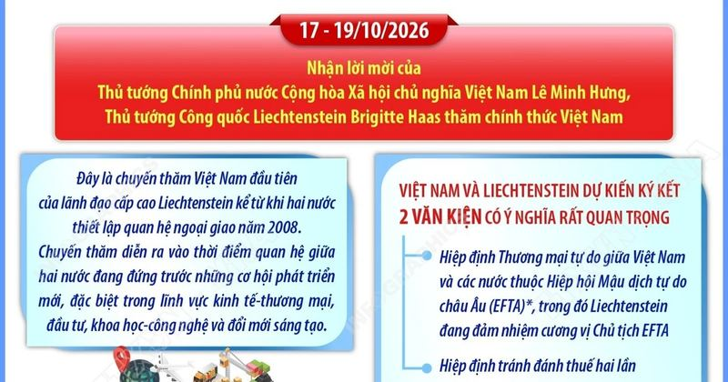
🔥
🔥
🔥
🔥
🔥
Hoa khôi Thanh Hảo: "Gia đình phản đối khi tôi nhận lời đóng cảnh táo bạo"
(Dân trí) - Lần đầu chạm ngõ điện ảnh, dù không xuất hiện quá nhiều, Thanh Hảo thừa nhận đây là thử thách không hề dễ dàng đối với một diễn viên tay ngang như cô. Vai diễn đầu tay đầy thử thách Nhà sản xuất “Chị chị em e
🔥
Người đàn ông phá dỡ biệt thự hàng chục tỷ của người lạ ngẫu nhiên để bạn gái tin mình là chủ sở hữu
TIN MỚI Theo báo chí đưa tin, tại Ninh Ba, Chiết Giang, Trung Quốc, một phụ nữ họ Ốc đã chi hàng chục triệu nhân dân tệ (hàng chục tỷ VNĐ) để mua một căn biệt thự sang trọng kèm hai chỗ đậu xe làm của hồi môn cho con gái
🔥
🔥
Bên trong tượng Nhân sư Ai Cập thực sự ẩn giấu bao nhiêu bí mật? Vì sao lại cấm khảo sát khoa học?
TIN MỚI Đứng ở bờ phía tây thủ đô Cairo và phóng tầm mắt về phía sa mạc hoang vu, bất cứ ai cũng phải sững sờ trước bức tượng Nhân sư vĩ đại. Mang thân hình dũng mãnh của loài sư tử đực kết hợp cùng khuôn mặt con người t
🔥
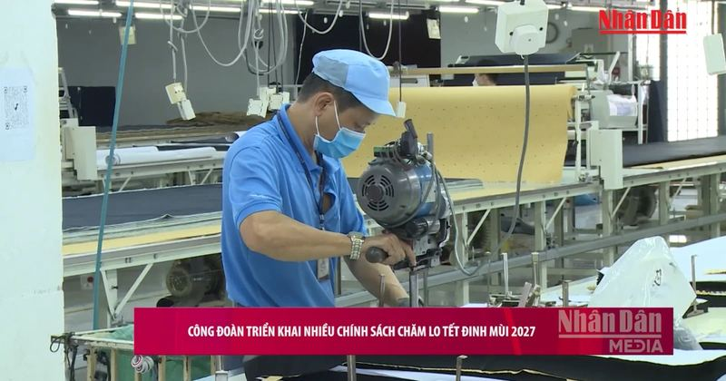
🔥
🔥
🔥
Mẹ ra nước ngoài mưu sinh rồi mất tích 27 năm, con gái ở Bắc Ninh mòn mỏi tìm
Hoàn cảnh đau lòng Cuối ngày, sau khi chăm sóc gia đình, chị Đoàn Thị Tuyết Chinh (SN 1992, xã Hợp Thịnh, TP. Bắc Ninh ) bắt đầu ca làm đêm quen thuộc. Giữa đêm, lúc được nghỉ ngơi, chị lại tranh thủ kiểm tra điện thoại.
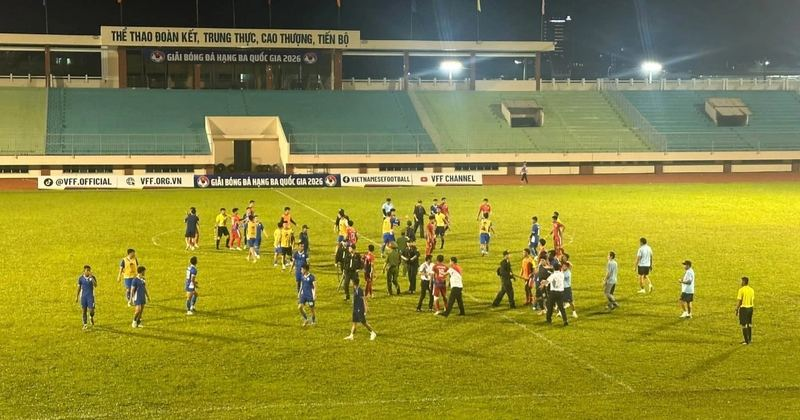
🔥
🔥
🔥
🔥
🔥
Phát ngôn viên Nhà Trắng Katie Zacharia rời chức vụ sau chưa đầy một tuần
Facebook Twitter Lưu bài viết Bản in Copy link Phát ngôn viên Nhà Trắng Katie Zacharia ngày 16/10 đã rời vị trí sau chưa đầy một tuần làm việc, trong bối cảnh bà vấp phải sức ép từ truyền thông và những câu hỏi liên quan
🔥
🔥
Tổng thống Putin lệnh tiếp tục tấn công, lập vùng đệm dọc biên giới Ukraine
(Dân trí) - Tổng thống Vladimir Putin tuyên bố Nga đang thiết lập “vùng an ninh” bên trong lãnh thổ Ukraine dọc theo biên giới chung giữa hai nước. Tổng thống Nga Vladimir Putin đến thăm một sở chỉ huy của lực lượng liên
🔥
🔥
Lê Công Tuấn Anh: Ngôi sao ở đỉnh cao qua đời ở tuổi 29 không có tài sản gì
Đỉnh cao danh vọng Nhắc đến Lê Công Tuấn Anh , nhiều khán giả vẫn nhớ đến Quang “Đông ki sốt” trong Vị đắng tình yêu , vai diễn đưa tên tuổi anh đến gần với công chúng và trở thành một dấu ấn khó quên của điện ảnh Việt N
🔥
🔥
🔥
🔥
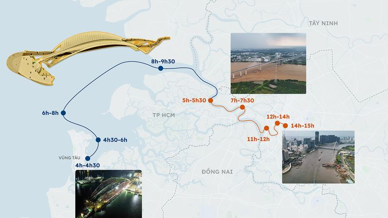
🔥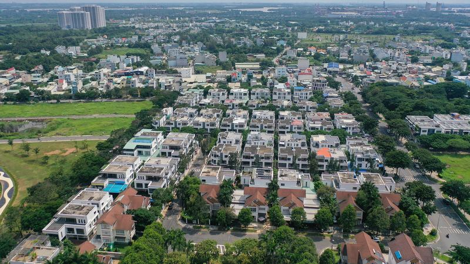
🔥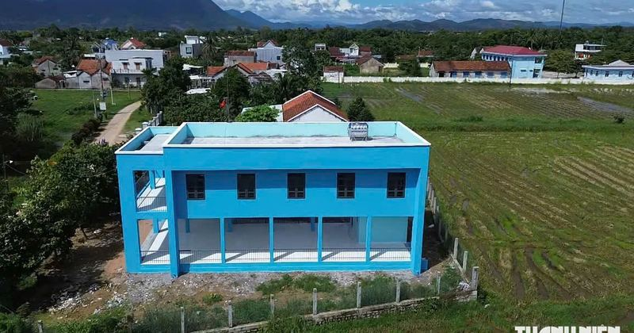
🔥
🔥
🔥
Sáng nay, khai mạc kỳ họp thứ 2 Quốc hội khóa XVI: Xem xét, quyết định nhiều nội dung quan trọng
Tổng Bí thư, Chủ tịch nước Tô Lâm, Thủ tướng Lê Minh Hưng và các đại biểu Quốc hội - Ảnh: GIA HÂN Theo chương trình, sáng nay (17-10) sẽ diễn ra phiên trù bị và khai mạc kỳ họp thứ 2, Quốc hội khóa XVI. Trước khi diễn ra
🔥
🔥
Năm 2027 chi trả BHXH, trợ cấp thất nghiệp qua tài khoản an sinh trên VNeID
Năm 2027 chi trả BHXH, trợ cấp thất nghiệp qua tài khoản an sinh trên VNeID Cuối năm 2026, hệ thống Bảo hiểm xã hội kết nối, chia sẻ dữ liệu với định danh điện tử, để từ năm 2027 chi trả chế độ BHXH, BHTN qua tài khoản h
🔥
🔥
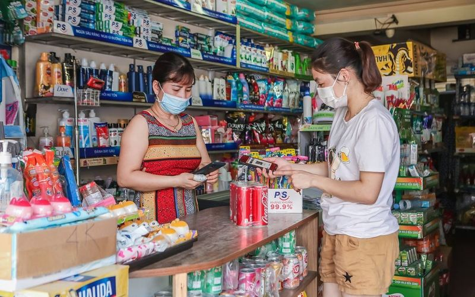
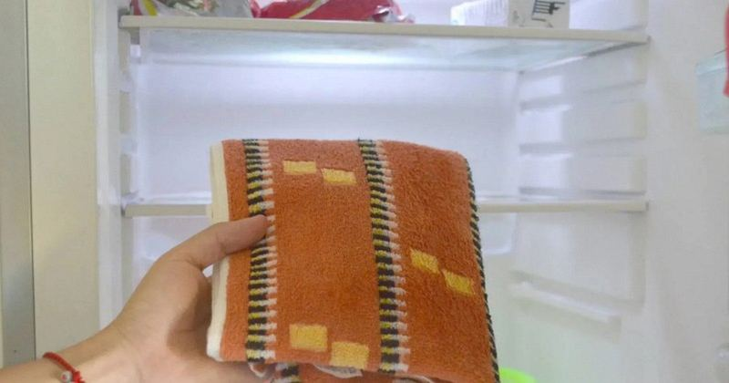
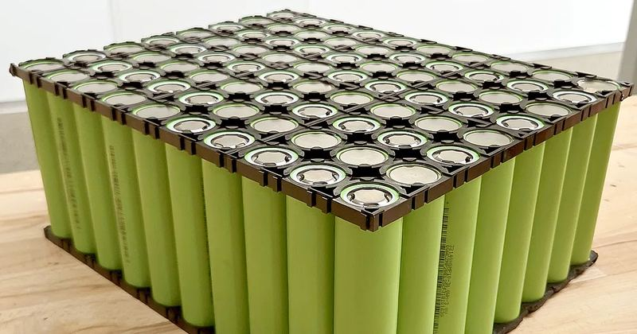
Hà Nội: Tạm giữ hình sự đối tượng đập phá kính xe ô tô trên đường Giải Phóng
Nguyễn Văn Kiên. Công an phường Hoàng Mai (Hà Nội) đã ra quyết định tạm giữ hình sự Nguyễn Văn Kiên, tiếp tục củng cố hồ sơ để xử lý về hành vi có dấu hiệu phạm tội “Cố ý làm hư hỏng tài sản” theo khoản 1, Điều 178 Bộ lu
Góc khuất nghề huấn luyện robot: Kiệt quệ rửa bát hàng trăm lần mỗi ngày
(Dân trí) - Được gắn các thiết bị ghi lại chuyển động để gấp quần áo hay rửa bát hàng trăm lần mỗi ngày, nhiều lao động tại Trung Quốc đang kiếm sống bằng nghề "huấn luyện viên robot". Khắp các đô thị tại Trung Quốc, một
Tên lửa Kh-101 công nghệ tàng hình, tầm bắn kỷ lục phá vỡ mọi quy chuẩn tên lửa hành trình
Tên lửa Tomahawk tầm bắn cực xa, đa nền tảng, định hình tác chiến hiện đại Trong số các dòng vũ khí chiến lược đang phục vụ trong Không quân Vũ trụ Nga, tên lửa hành trình phóng từ trên không Kh-101 do Cục Thiết kế Radug
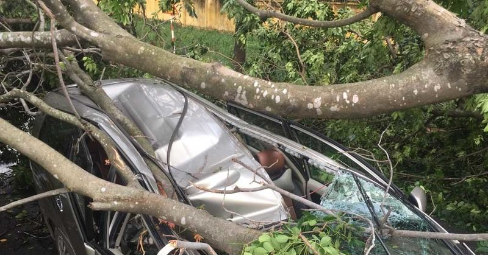
Phát hiện 2 tàu khổng lồ 7500 tấn do Việt Nam tự đóng, đưa robot xuống độ sâu 4.000m cứu nạn tàu ngầm
TIN MỚI Hải quân Việt Nam có hai tàu chuyên dụng phục vụ nhiệm vụ cứu nạn tàu ngầm, gồm tàu Yết Kiêu 927 và tàu 928, với tổng lượng giãn nước lên tới 7.470 tấn. Đây đều là những con tàu được đóng mới trong nước, có khả n
Tên lửa Tomahawk tầm bắn cực xa, đa nền tảng, định hình tác chiến hiện đại
Phóng tên lửa hành trình Tomahawk. (Ảnh: Hải quân Mỹ/militarnyi.com) Tomahawk là một trong những tên lửa hành trình lâu đời và được sử dụng rộng rãi nhất của Mỹ, nổi bật với tầm bắn rất xa và khả năng phóng từ nhiều loại
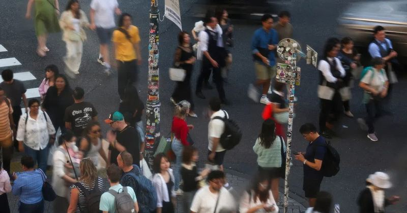

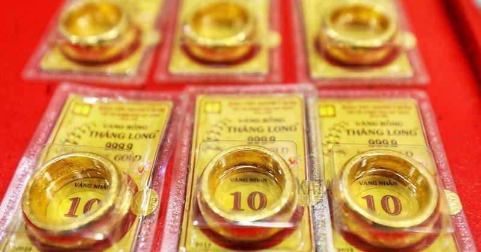
Giá vàng nhẫn trơn, vàng miếng sáng 17/10 tại SJC, PNJ, DOJI, Bảo Tín Minh Châu và Bảo Tín Mạnh Hải
TIN MỚI Giá vàng trong nước mở cửa phiên sáng 17/10 nhìn chung ổn định so với cuối phiên trước. Vàng nhẫn tại SJC được niêm yết ở mức 140,4 - 143,4 triệu đồng/lượng, trong khi giá bán ra vàng miếng SJC tại các thương hiệ

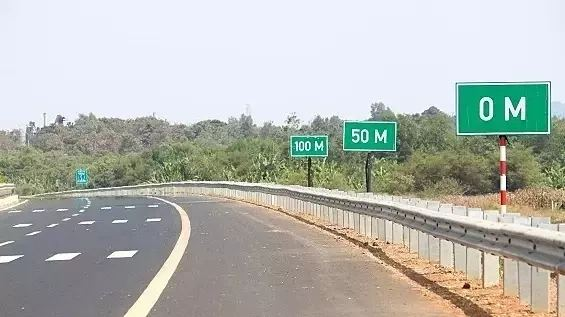
Đề nghị lắp biển báo để xử phạt lỗi giữ khoảng cách trên 16 tuyến cao tốc
Đề nghị lắp biển báo để xử phạt lỗi giữ khoảng cách trên 16 tuyến cao tốc Cục Cảnh sát giao thông đề nghị lắp biển báo, kẻ vạch tại 77 vị trí trên 16 tuyến cao tốc để xử phạt tài xế vi phạm quy định về khoảng cách an toà
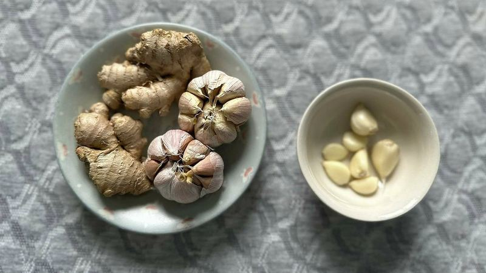

Tin tức sáng 17-10: TP.HCM sẽ kết nối hệ thống camera với dữ liệu dân cư
Lực lượng cảnh sát giao thông TP.HCM ứng dụng hệ thống camera AI xử lý vi phạm giao thông - Ảnh: MINH HÒA TP.HCM sẽ kết nối hệ thống camera với dữ liệu dân cư UBND TP.HCM vừa ban hành kế hoạch triển khai phương án kết nố
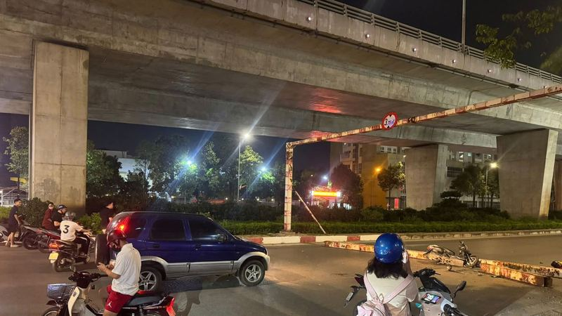
Thế giới mất 3 - 5 năm nhưng Việt Nam đang chạy đua để hoàn thành trong chưa đầy 24 tháng: "Đại lộ khách sạn" cùng các siêu công trình đón VIP dần thành hình, từng phải huy động tới 7.600 người cho 1 hạng mục
TIN MỚI Để xây dựng một công trình hạ tầng hàng không quy mô lớn, nhiều quốc gia trên thế giới phải mất hàng năm trời, ngay cả khi sở hữu công nghệ hiện đại và nguồn lực dồi dào. Đơn cử, theo Changi Airport Group, nhà ga
Sau The Siren World Opens 2026, SACOMBANK Visa mang tinh thần “tận hưởng trọn vẹn” vào nhịp sống thường ngày
Lễ hội âm nhạc The Siren World Opens 2026 đã khép lại, những đoạn fancam dần hạ nhiệt và "siêu du thuyền" SACOMBANK Visa cũng đã cập bến. Với nhiều bạn trẻ, điều đọng lại sau lễ hội này không phải là trời mưa hay nắng, m
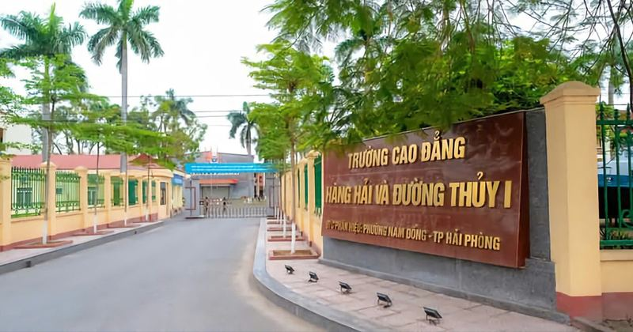
Tạm giữ hình sự một học viên liên quan vụ đánh nam sinh 16 tuổi tử vong ở Hải Phòng
Công an TP Hải Phòng tạm giữ hình sự một học viên đánh nam sinh Hoàng Công H. thương tích nặng tại Trường cao đẳng Hàng hải và Đường thủy 1, sau đó nạn nhân tử vong - Ảnh: N. HOÀN Theo Công an TP Hải Phòng , cơ quan điều
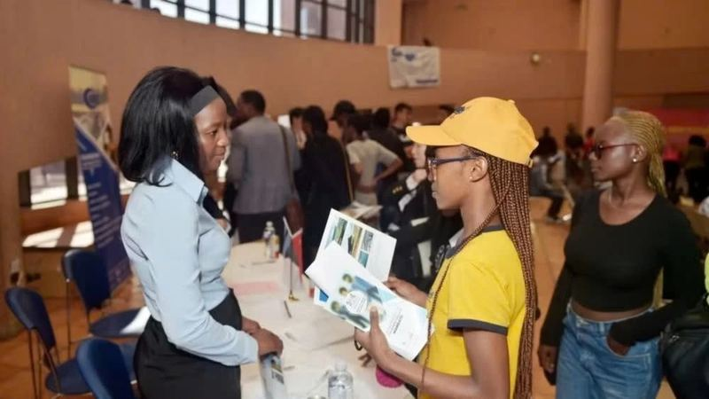
Bất ngờ với thí sinh Hoa hậu Việt Nam viết thư pháp, biểu diễn 'Cô Đôi thượng ngàn'
Thí sinh Mai Thị Yến Nhi mở đầu Thử thách Tài năng và Nghệ thuật vào tối 16/10 bằng màn múa quạt điêu luyện. Thử thách này không làm khó người đẹp Thái Nguyên vì cô có kinh nghiệm hơn 4 năm làm vũ công. Yến Nhi chia sẻ t
Vợ chồng NSND mua nhà bị lừa: "Người lãnh đạo công an ấy đã giúp chúng tôi"
TIN MỚI Mới đây, NSND Thanh Điền đã về thăm lại căn nhà vợ chồng ông từng mua và sống cách đây 40 năm. Thanh Kim Huệ trong nhà Ông tâm sự: "Căn nhà này chúng tôi ở trong 10 năm mới chuyển đi. Đây là căn nhà lớn đầu tiên
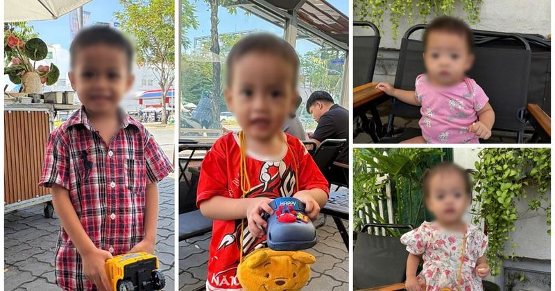
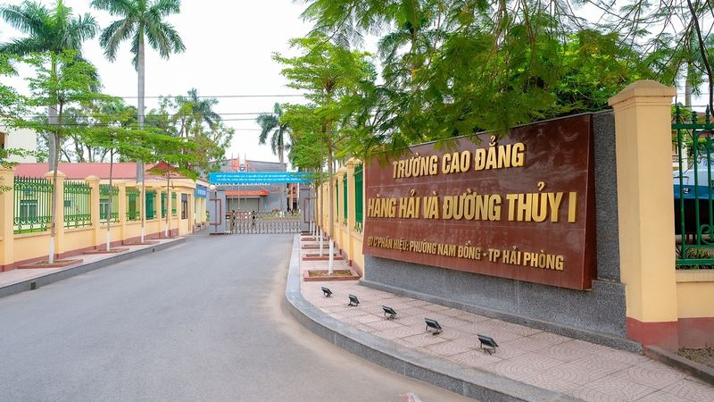
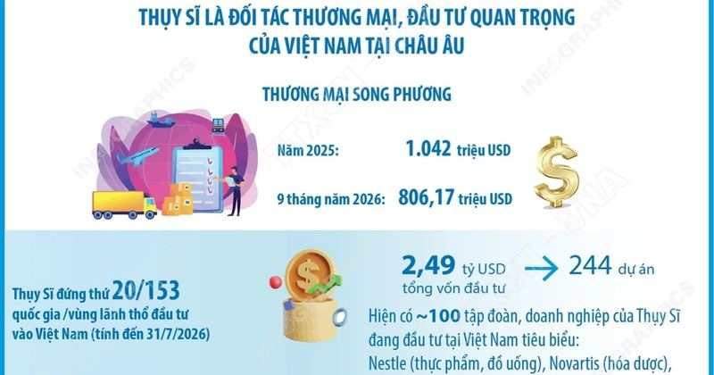
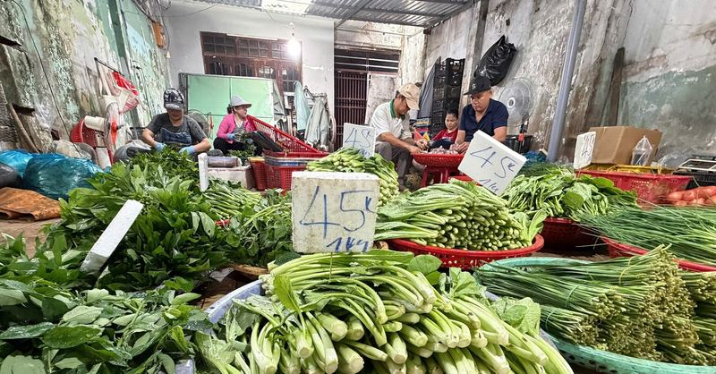
Giá rau tại TPHCM hạ nhiệt nhưng dự báo tiếp tục neo cao trong 3 tuần tới
Khảo sát tại các chợ Thạch Đà, Phạm Văn Bạch, Phạm Văn Hai, chợ Cầu và một số điểm bán rau tại TPHCM cho thấy giá nhiều loại rau đã giảm nhẹ so với tuần trước nhưng vẫn ở mức cao. Với nhóm rau ăn lá, giá nhiều mặt hàng g
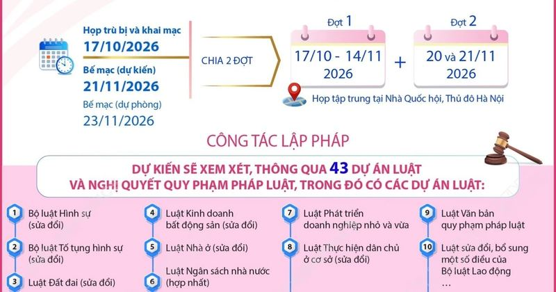
Kỳ họp thứ 2, Quốc hội khóa XVI dự kiến xem xét, thông qua 43 dự án luật, nghị quyết
Facebook Twitter Lưu bài viết Bản in Copy link Kỳ họp thứ 2, Quốc hội khóa XVI họp phiên trù bị và khai mạc vào sáng 17/10/2026; dự kiến bế mạc vào ngày 21/11/2026. Kỳ họp được tổ chức theo hình thức họp tập trung và chi
Chỉ đạo, điều hành của Chính phủ, Thủ tướng Chính phủ nổi bật tuần 10-16/10/2026
Tăng cường các biện pháp quản lý, điều hành giá trong những tháng cuối năm 2026 Phó Thủ tướng Nguyễn Văn Thắng ký Công điện số 70/CĐ-TTg ngày 15/10/2026 của Thủ tướng Chính phủ về việc tăng cường các biện pháp quản lý, đ
Tử vi tuần mới (19/10-25/10): Top 4 con giáp được Thần Tài ưu ái nhất, công việc bứt phá, tình duyên ngọt ngào
TIN MỚI Bước sang tuần mới từ ngày 19/10 đến 25/10, vận trình của 12 con giáp tiếp tục có những sắc thái khác nhau. Có người cần kiên nhẫn giải quyết những việc còn dang dở, có người lại đứng trước cơ hội mở rộng công vi

Trả lời phỏng vấn Báo Sài Gòn Giải Phóng, Chủ tịch Quốc hội Trần Thanh Mẫn: Luật phải thông suốt khi thực thi
Chủ tịch Quốc hội Trần Thanh Mẫn. Ảnh: QUANG PHÚC Hôm nay 17-10, kỳ họp thứ 2, Quốc hội khóa XVI khai mạc tại Nhà Quốc hội. Trước thềm kỳ họp, trả lời phỏng vấn Báo Sài Gòn Giải Phóng, đồng chí Trần Thanh Mẫn, Ủy viên Bộ
Bữa nhậu đẫm máu, 17 tháng trốn chạy và cuộc truy tìm của hình sự Hà Nội
20h ngày 25/9, tại một công trường thi công nhựa ở Hải Phòng, Nguyễn Viết Lâm (51 tuổi, trú tại xã Quảng Bị, Hà Nội) kết thúc ca làm việc như thường lệ. Người đàn ông này không hay biết rằng, ở bên ngoài, các trinh sát Đ
“Cái đêm hôm ấy đêm gì” từng gây chấn động và chuyện thêm 5 lạng thịt Tết
Làng Láng, xã Phú Yên, huyện Thọ Xuân cũ (nay là xã Xuân Tín, Thanh Hóa) từng là bối cảnh trong bút ký “Cái đêm hôm ấy… đêm gì” của cố nhà văn Phùng Gia Lộc, gây chấn động 40 năm trước nay đã đổi thay rất nhiều. “Cái đêm
Nhận định Thanh Hóa vs Nam Định, 18h00 ngày 17/10: 2 trường phái đối nghịch
Nhận định trước trận đấu Thanh Hóa vs Nam Định Cuộc so tài giữa Đông Á Thanh Hóa và Thép Xanh Nam Định trong những mùa giải gần đây luôn mang hơi thở của một trận cầu đinh rực lửa bậc nhất bóng đá Việt Nam. Đây không đơn
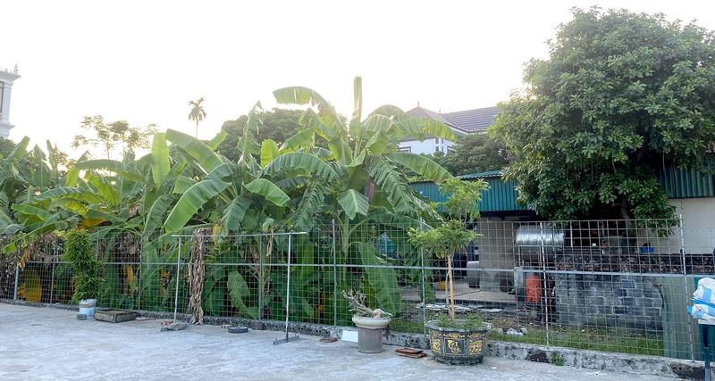
Phát hiện nam sinh 19 tuổi quyết không học đại học, mỗi ngày bán hàng trăm đơn hàng, kiếm 21 tỷ đồng chỉ nhờ 1 sản phẩm
TIN MỚI Tháng 8/2025, Mike Satterlee, khi đó vừa tốt nghiệp trung học tại Mỹ, đối mặt với tình huống chưa từng có trong quá trình kinh doanh. Sau một bài đăng trên Instagram, số lượng khách đặt mua sản phẩm của công ty C
Cocoxim và chiến lược phát triển bền vững để chinh phục thị trường quốc tế
Cocoxim và chiến lược phát triển bền vững để chinh phục thị trường quốc tế Ánh Dương | 17/10/2026 08:00 AM | Kinh doanh Theo dõi Cafebiz.vn trên Trong nhiều năm, Việt Nam luôn nằm trong nhóm các quốc gia xuất khẩu dừa hà
Khởi tố người đàn ông đi ngược chiều, bóp cổ, đánh tài xế ô tô sau va chạm
Ngày 17/10, Cơ quan Cảnh sát điều tra Công an tỉnh Vĩnh Long đã khởi tố vụ án, khởi tố bị can Nguyễn Thế Bình (SN 1994, ngụ phường Bến Tre, tỉnh Vĩnh Long) về hành vi Gây rối trật tự công cộng. Bình bị áp dụng biện pháp

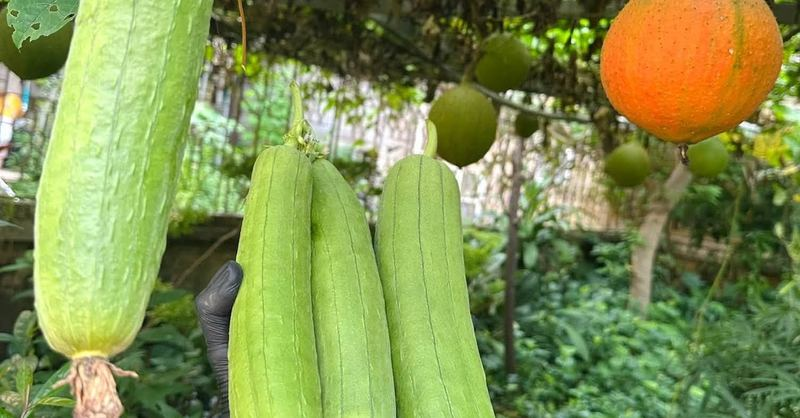

Thúc đẩy quan hệ Đối tác chiến lược toàn diện Việt Nam-EU và làm sâu sắc quan hệ Việt Nam-Bỉ
Nhận lời mời của Chủ tịch Hội đồng châu Âu Antonio Costa và Thủ tướng Bỉ Bart De Wever, Tổng Bí thư, Chủ tịch nước Tô Lâm và Phu nhân sẽ thăm chính thức Liên minh châu Âu và Vương quốc Bỉ từ ngày 21-24/10/2026. Nhân dịp
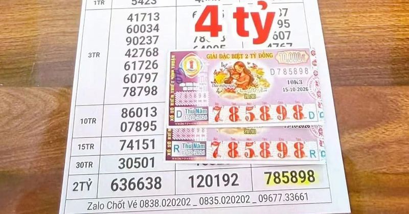
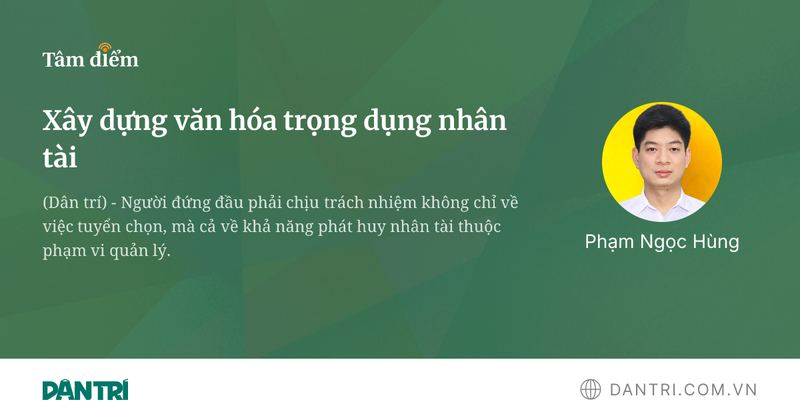
Huy động hơn 3.500 người từ hơn 40 quốc gia để xây siêu công trình dưới biển dài nhất thế giới, đại gia gốc Thanh Hóa cũng góp mặt
TIN MỚI Tại eo biển Fehmarnbelt thuộc biển Baltic, tuyến hầm nối đảo Lolland của Đan Mạch với đảo Fehmarn của Đức đang từng bước hình thành. Với chiều dài khoảng 18 km, công trình sẽ trở thành đường hầm chìm dài nhất thế
Chưa đầy 1 tháng nữa sẽ có 1 con giáp hết xui, tài lộc phát đạt, 2 con giáp đã giàu lại càng giàu hơn
TIN MỚI Tháng 10 âm lịch sắp tới (tháng Kỷ Hợi) mang đến sự chuyển dịch mạnh mẽ của các hành tinh và dòng năng lượng Thủy khí tràn đầy. Đây là thời điểm vượng phát của một số con giáp nhờ sự tương hợp hoàn hảo với địa ch
WHO nâng mức độ sẵn sàng ứng phó dịch Ebola tại 22 quốc gia trên ba châu lục
Khu vực đông Địa Trung Hải thuộc mạng lưới quản lý của cơ quan y tế Liên hợp quốc bao gồm 22 quốc gia và vùng lãnh thổ. Trong đó, các nỗ lực hỗ trợ đang được tăng cường đặc biệt cho Djibouti, Somalia và Sudan - ba quốc g
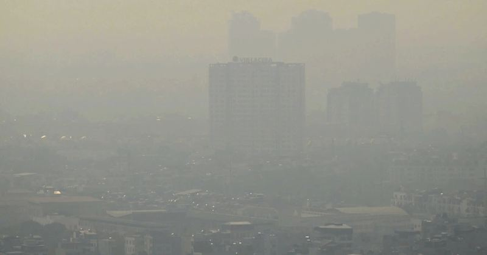
Hà Nội cảnh báo ô nhiễm không khí trước 5-7 ngày, kích hoạt ngay giải pháp
(Dân trí) - Trước 5-7 ngày khi có tín hiệu nguy cơ ô nhiễm không khí, Hà Nội sẽ phát thông tin nhận định đến người dân, cơ quan, đơn vị trên toàn thành phố để chủ động phòng tránh. UBND TP Hà Nội vừa ban hành kế hoạch tă
Chiến dịch 500 ngày đêm: Nhiều kết quả nổi bật trong công tác tìm kiếm, quy tập hài cốt liệt sĩ
Những ngày vừa qua, nhiều tỉnh, thành phố trên toàn quốc long trọng tổ chức Lễ truy điệu, an táng hài cốt liệt sĩ đã được tìm kiếm, quy tập trong "Chiến dịch 500 ngày đêm đẩy mạnh thực hiện tìm kiếm, quy tập và xác định
Cận cảnh chiếc xe chở theo 5.300m3 nước di chuyển qua 6 tuyến đường Hà Nội lúc 23h khuya
TIN MỚI 7 ngày vừa qua, cứ 23h mỗi tối hình ảnh chiếc xe cheo 5.300 m3 khối nước di chuyển trên khắ các tuyến phố trung tâm khiến nhiều người không khỏi bất ngờ. Được biết, TP Hà Nội đang thử nghiệm dòng xe phun sương dậ
Bị thu hồi hơn 1.000m2 đất sử dụng 30 năm, vì sao không được bồi thường về đất?
Người dân cho rằng đất sử dụng ổn định, chính quyền xác định đất công ích Theo trình bày của ông N. (ngụ TP Bắc Ninh), năm 2013, để thực hiện dự án khu dân cư tại địa phương, UBND huyện Y., tỉnh Bắc Ninh (nay thuộc phườn
Đột nhập trường học trộm linh kiện 44 bộ máy tính trị giá gần nửa tỷ đồng
(Dân trí) - Sau khi theo dõi mạng xã hội, biết một trường học vừa được lắp đặt máy tính, người đàn ông 36 tuổi đã đột nhập, tháo trộm linh kiện của 44 bộ máy tính trị giá gần 500 triệu đồng. Ngày 17/10, thông tin từ Viện
Khách mua iPhone Duo có thể phải chờ đến Tết Nguyên đán 2027 để nhận máy
(Dân trí) - Nhiều hệ thống bán lẻ tại Việt Nam đã ngừng nhận đặt trước iPhone Duo do hết suất trong đợt đầu. Người đặt mua qua cửa hàng trực tuyến của Apple có thể phải chờ đến ngày 27/1/2027 mới nhận máy. Từ 19h ngày 16
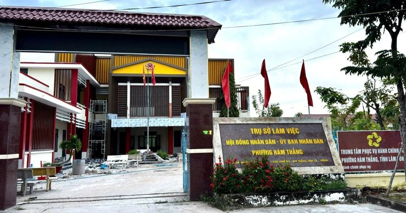
Một công ty bị tố nợ hơn 13,7 tỷ đồng bảo hiểm xã hội của người lao động
(Dân trí) - Nhiều giáo viên, nhân viên Công ty TNHH Thanh Nguyên (tỉnh Lâm Đồng) phản ánh bị nợ lương, chậm đóng các khoản bảo hiểm kéo dài, trong đó nợ bảo hiểm xã hội hơn 13,7 tỷ đồng. Ngày 16/10, UBND phường Hàm Thắng
Đủ 'chiêu trò' trục lợi nhà ở xã hội: Từ thu tiền chênh đến lừa bán 'suất ngoại giao'
Đủ 'chiêu trò' trục lợi nhà ở xã hội: Từ thu tiền chênh đến lừa bán 'suất ngoại giao' Theo Đình Phong | 17/10/2026 07:21 AM | Xã hội Theo dõi Cafebiz.vn trên Từ thu tiền chênh hàng chục tỷ đồng, làm giả hồ sơ đến rao bán
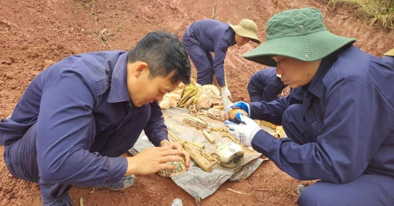
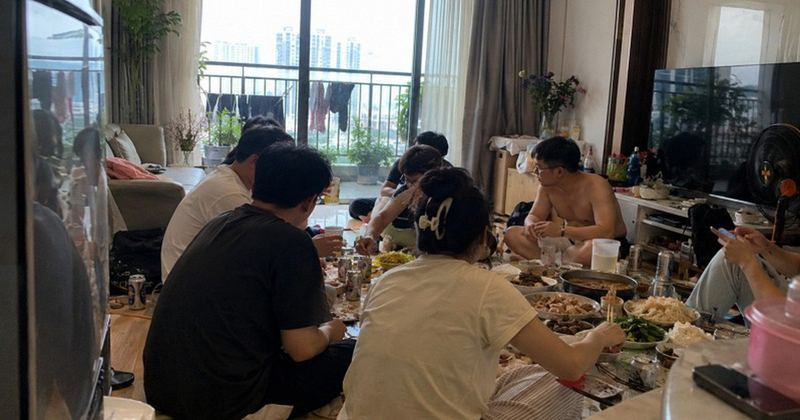
Thế giới mất 3 - 5 năm nhưng Việt Nam đang chạy đua để hoàn thành trong chưa đầy 24 tháng: "Đại lộ khách sạn" cùng các siêu công trình đón VIP dần thành hình, từng phải huy động tới 7.600 người cho 1 hạng mục
Thế giới mất 3 - 5 năm nhưng Việt Nam đang chạy đua để hoàn thành trong chưa đầy 24 tháng: "Đại lộ khách sạn" cùng các siêu công trình đón VIP dần thành hình, từng phải huy động tới 7.600 người cho 1 hạng mục Theo Thu Ph
Công an bất ngờ kiểm tra cửa hàng Dương Dolce, khởi tố Nguyễn Văn Dương SN 2000
TIN MỚI Ngày 16/10/2026, Công an tỉnh Hưng Yên cho biết, ngày 21/9/2026, Công an xã Hưng Hà, tỉnh Hưng Yên phối hợp với Đội Quản lý thị trường số 6, Chi cục Quản lý thị trường tỉnh Hưng Yên tiến hành kiểm tra cửa hàng Dư
Có 65 triệu đồng, nên mua iPhone Duo hay combo iPhone 18 Pro Max và MacBook Neo?
Apple mở đặt trước iPhone Duo vào 19h ngày 16/10. Tại Việt Nam, mẫu iPhone màn hình gập đầu tiên có giá 64,999 triệu đồng. Với thiết kế nhỏ gọn cùng khả năng đa nhiệm thực dụng, iPhone Duo hứa hẹn đáp ứng một phần nhu cầ
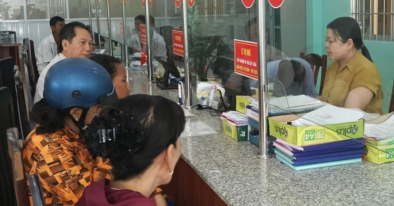
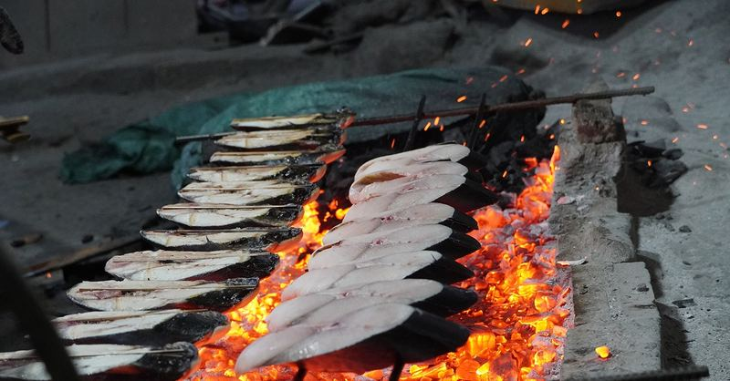
Món cá nướng than hoa thơm nức mũi, du khách đến Cửa Lò rủ nhau mua làm quà
Xem clip: 6h, tại chợ bến cá Nghi Thủy (phường Cửa Lò, tỉnh Nghệ An), không khí mua bán đã nhộn nhịp. Khi những con thuyền cập bến, khoang đầy cá biển như cá thu, cá chim, cá trích…, các tiểu thương và chủ cơ sở chế biến
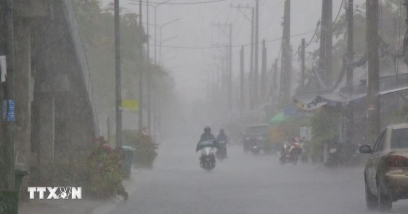
Vụ 175 người nhập viện ở Quảng Ngãi: 12/13 mẫu thực phẩm nhiễm Salmonella
Ngày 16/10, Viện Pasteur Nha Trang thông báo kết quả kiểm nghiệm 13 mẫu thực phẩm liên quan vụ nghi ngộ độc thực phẩm xảy ra tại phường Cẩm Thành. Kết quả cho thấy, 12/13 mẫu thực phẩm do Quảng Ngãi gửi đến dương tính vớ
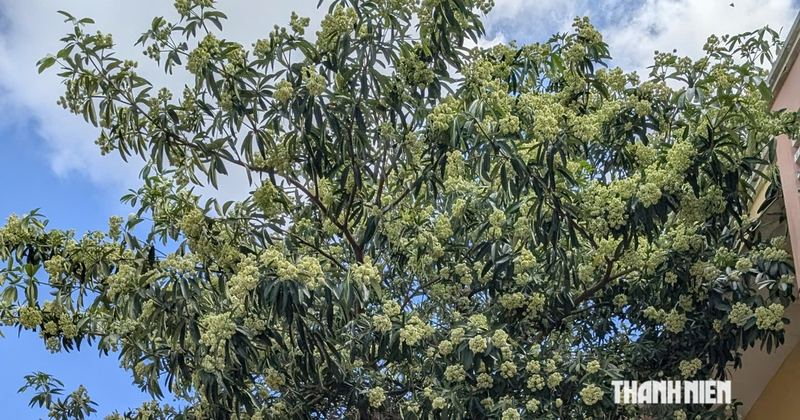
Vì sao người dân Ngãi Giao, TP.HCM muốn phá bỏ những cây hoa sữa hơn 20 năm?
Mùi hoa sữa nồng nặc, ảnh hưởng sinh hoạt Theo phản ánh của người dân tại xã Ngãi Giao (TP.HCM), vào thời điểm hoa sữa nở rộ, mùi hương từ những cây hoa trong khu vực Trung tâm thương mại Ngãi Giao lan tỏa ra xung quanh,
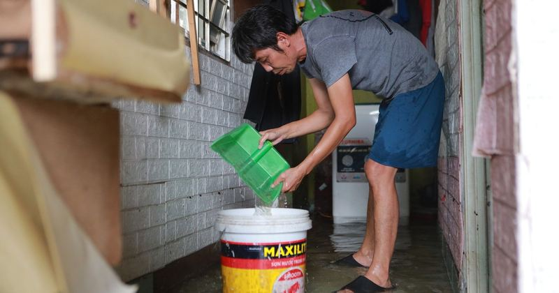
Phòng trọ ngập nước ở TP.HCM, nữ công nhân mất số tài sản bằng 2 tháng lương
Nước ngập rút, nhiều người dân tại phường Thủ Đức ( TP.HCM ) bắt đầu tính toán lại những khoản thiệt hại sau trận ngập nước . Tủ lạnh, máy giặt ngâm nước hư hỏng khiến không ít người mất khoản tiền bằng khoảng 2 tháng lư
[Video] Dự báo thời tiết ngày 17/10/2026: Nắng diện rộng tại Bắc Bộ và Trung Bộ, Nam Bộ đề phòng dông lốc về chiều tối
Hôm nay, thời tiết trên cả nước tiếp tục có sự phân hóa. Bắc Bộ duy trì trạng thái tạnh ráo, miền Trung giảm mưa rõ rệt, trong khi các tỉnh phía nam vẫn xuất hiện mưa dông vào chiều tối. Tại Bắc Bộ, khối không khí lạnh t
WHO nâng mức độ sẵn sàng ứng phó dịch Ebola tại 22 quốc gia trên ba châu lục
Facebook Twitter Lưu bài viết Bản in Copy link Theo phóng viên TTXVN tại Liên hợp quốc, Tổ chức Y tế Thế giới (WHO) đang khẩn trương đẩy mạnh các biện pháp sẵn sàng ứng phó với dịch bệnh Ebola, giữa bối cảnh bóng ma xung
Giáo viên TPHCM làm gì dịp hè để được tính thu nhập tăng thêm hàng chục triệu?
Theo quy định của UBND TPHCM về xếp loại, chi thu nhập tăng thêm đối với cán bộ, công chức, viên chức và người lao động, số ngày làm việc thực tế là một trong những căn cứ xác định khoản thu nhập này. Riêng với giáo viên
Dự án mở rộng đường ở TP.HCM lên 30 m: Lãnh đạo phường trao thưởng cho dân
Chiều 16.10, UBND phường Bình Trưng phối hợp Ủy ban MTTQ Việt Nam phường Bình Trưng tổ chức lễ công bố đợt 2 các quyết định phê duyệt phương án chi tiết bồi thường, hỗ trợ, tái định cư và khen thưởng các tổ chức, hộ gia
Con học sa sút không phải chuyện một sớm một chiều: 5 dấu hiệu cảnh báo sớm mà bố mẹ dễ bỏ qua
TIN MỚI Nhìn bài kiểm tra của con bị điểm thấp, nhiều bố mẹ giật mình: “Sao tự nhiên con lại học kém thế này?”. Người vội tìm lớp học thêm, người trách con mải chơi, chưa chịu cố gắng. Nhưng kết quả học tập thường không
Dự báo thời tiết 17/10/2026: Miền Bắc nắng 34 độ kéo dài, Nam Bộ mưa to cục bộ
Theo Trung tâm Dự báo khí tượng thủy văn quốc gia, ngày 17/10, không khí lạnh tiếp tục suy yếu thêm, miền Bắc và từ Thanh Hóa đến TP Huế thời tiết ổn định, sáng sớm có nơi xuất hiện sương mù nhẹ, trời nắng hanh, với nhiệ


Hàng trăm hộ dân sống mòn mỏi, chờ di dời trong khuôn viên lăng vua nhà Nguyễn
Mòn mỏi sống trong khuôn viên lăng vua An Lăng nằm tại đường Duy Tân, phường An Cựu, TP Huế. Đây là nơi an táng các vua Dục Đức, Thành Thái và Duy Tân. Nằm xen kẽ trong khuôn viên lăng là những dãy nhà cũ xập xệ, ẩm thấp
🔥
Gửi 500 triệu không cần ra quầy: Lãi cao và tiện lợi “kéo” khách lên ngân hàng số
Thảo Anh vừa chọn gửi tiết kiệm 500 triệu đồng vào ngân hàng số Cake by VPBank, sau một hồi cân đo đong đếm. “Tôi có liên hệ cả ngân hàng VPBank, con số lãi suất được chào cũng rất cao, khoảng 8,5–8,7%, cho số tiền dư và
🔥
Chàng trai ở Hà Nội lấy vợ xinh đẹp người Nga, ngày cưới cả làng đến xem
Nhận lời yêu sau ba ngày gặp mặt Làm việc trong lĩnh vực giáo dục tiếng Anh nhiều năm song trước đây, anh Trương Chính Thức (ở Hà Nội) chưa từng nghĩ có ngày mình sẽ nên duyên với người nước ngoài. Suy nghĩ ấy thay đổi k
🔥